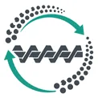
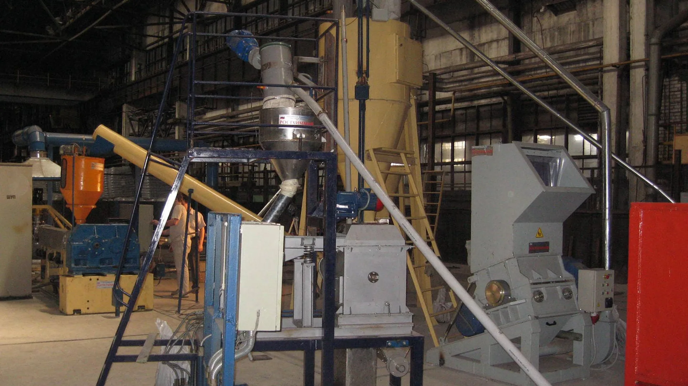
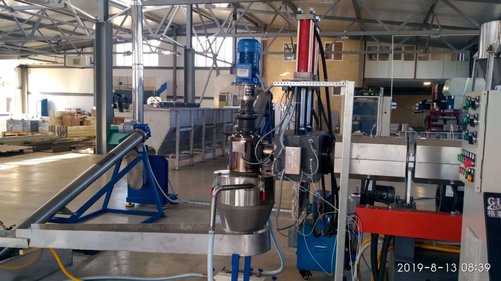
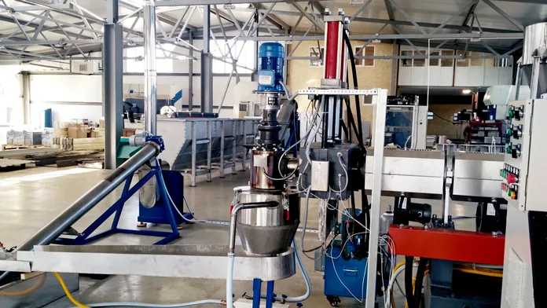
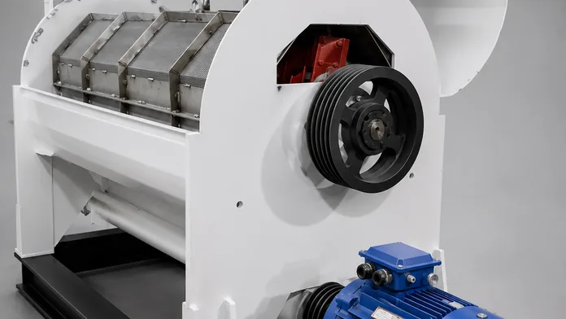
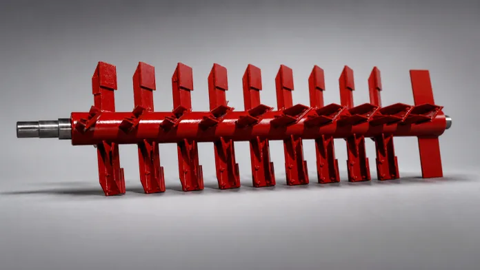
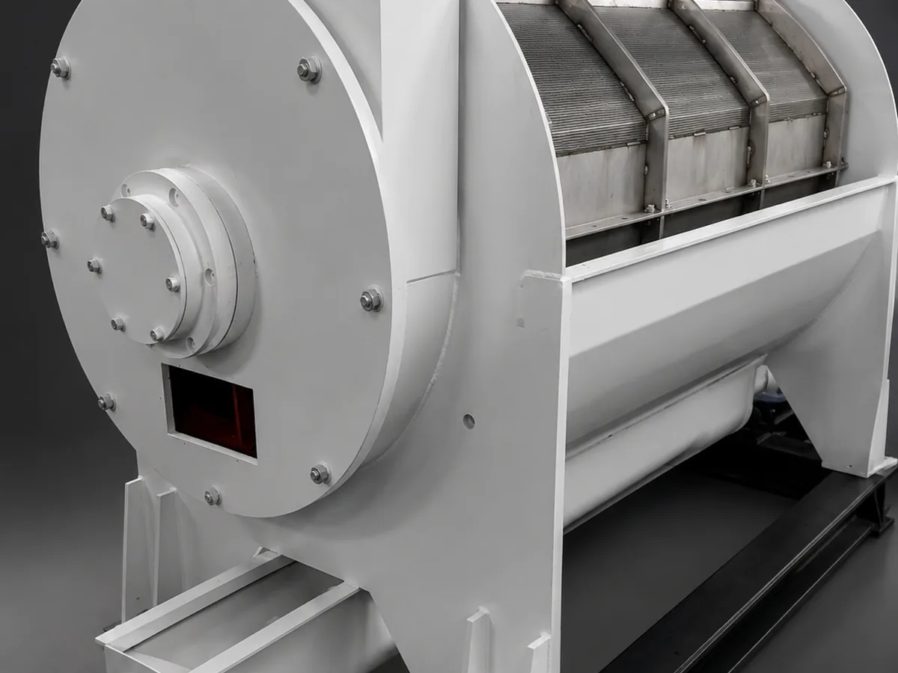

Изучаем сырьё
Тип материала, загрязнение, влажность, размер фрагмента и требуемая производительность.

ХИММАШИНЖЕНЕРИЯ ПЕРЕРАБОТКИ
Оборудование и линии для переработки вторичных полимеров — под ваше сырьё, производительность и площадку.
Каждый узел решает свою задачу. Вместе они превращают загрязнённый материал в подготовленное сырьё для нового производства.

01 / ПОДГОТОВКАСвязываем измельчение, мойку, сушку и грануляцию в один технологический процесс.
Открыть оборудование ↗Новая линия, отдельный узел или модернизация действующего производства.

01От подготовки материала до готовой гранулы.
Смотреть решение ↗
02Подберём узел для нужного этапа.
Перейти в каталог ↗
03Усилим проблемный участок производства.
Узнать подробнее ↗Собственные машины, узлы и системы. Выберите этап или посмотрите весь каталог.

Разбираемся, где процесс теряет производительность или качество. Заменяем отдельные узлы, перестраиваем мойку, сушку, дегазацию и фильтрацию.
Сначала разбираемся в задаче. Затем собираем конфигурацию и доводим её до работающего производства.
Тип материала, загрязнение, влажность, размер фрагмента и требуемая производительность.
Определяем последовательность операций и состав оборудования.
Изготавливаем оборудование и согласуем комплектацию.
Поставка, монтаж и пусконаладка на площадке.
Разрабатываем и производим оборудование для переработки ТБО и вторичных полимеров. Создаём нестандартные решения и встраиваем их в действующее производство.
Документы предприятия из действующего каталога.
Расскажите о сырье, объёмах и вашей площадке. Инженер поможет определить следующий шаг.